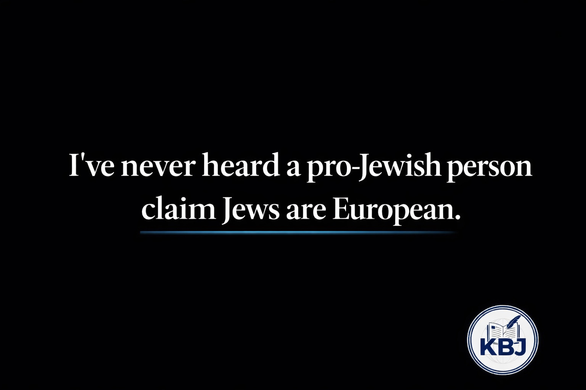
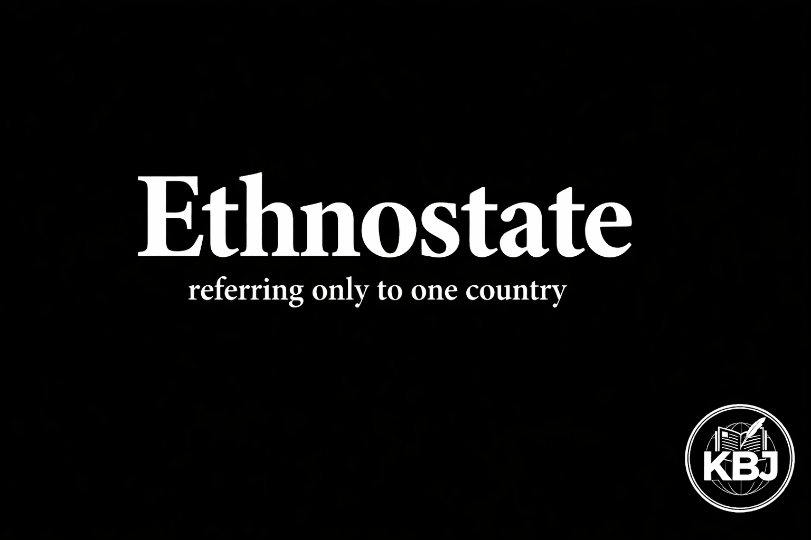
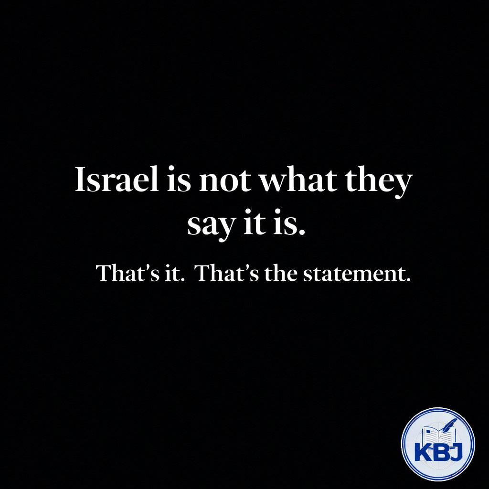
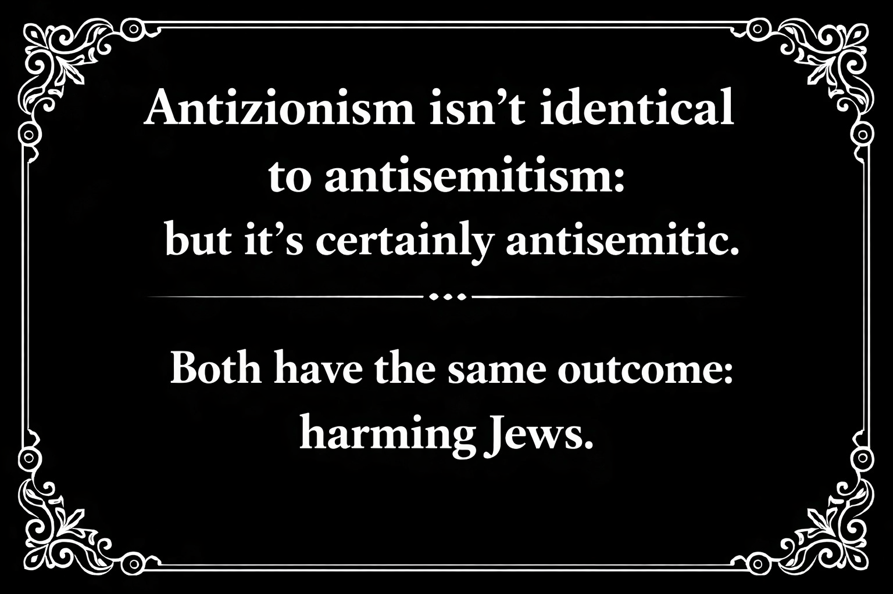
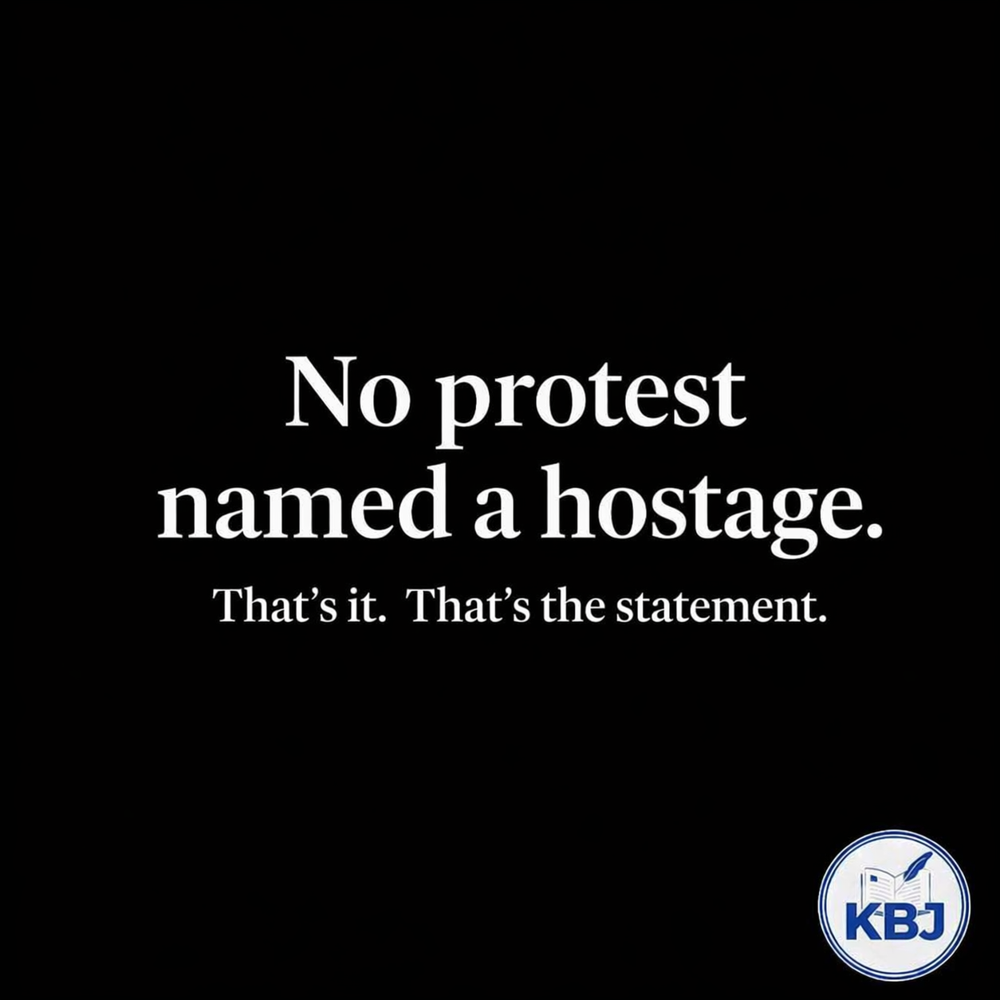
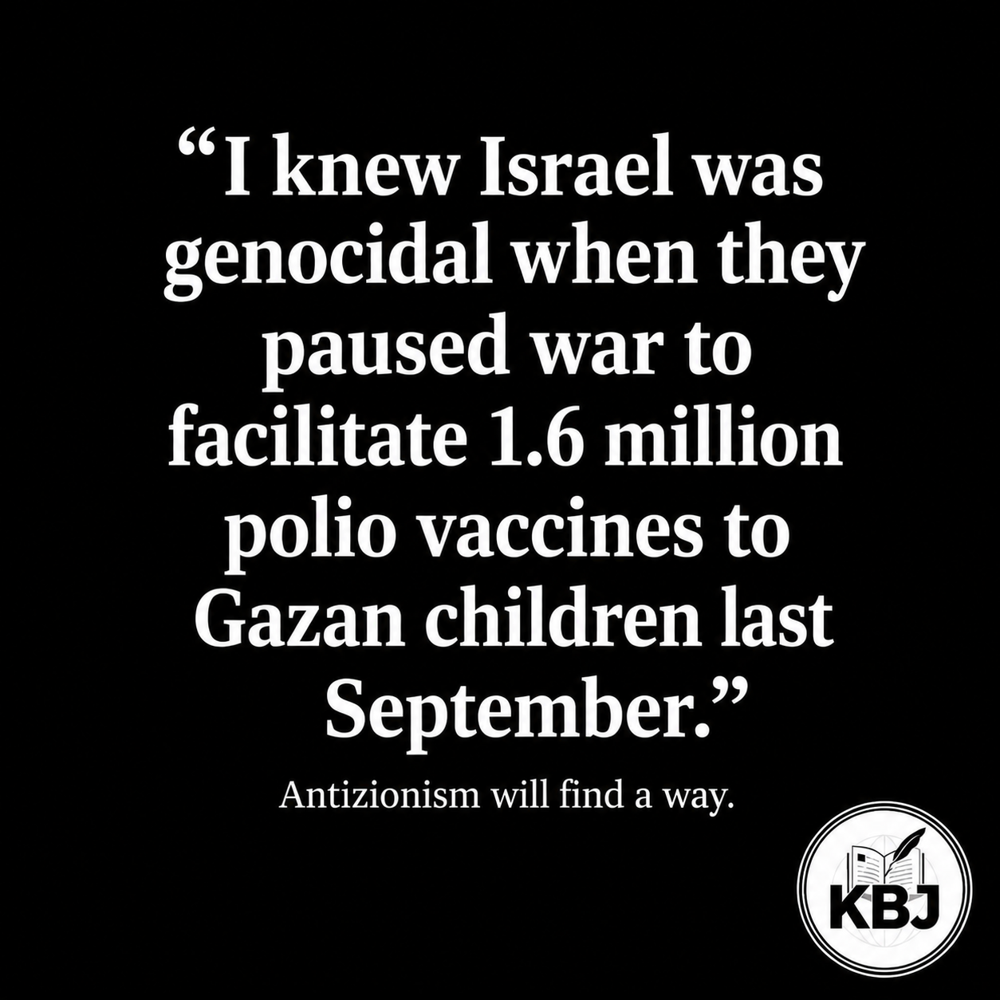
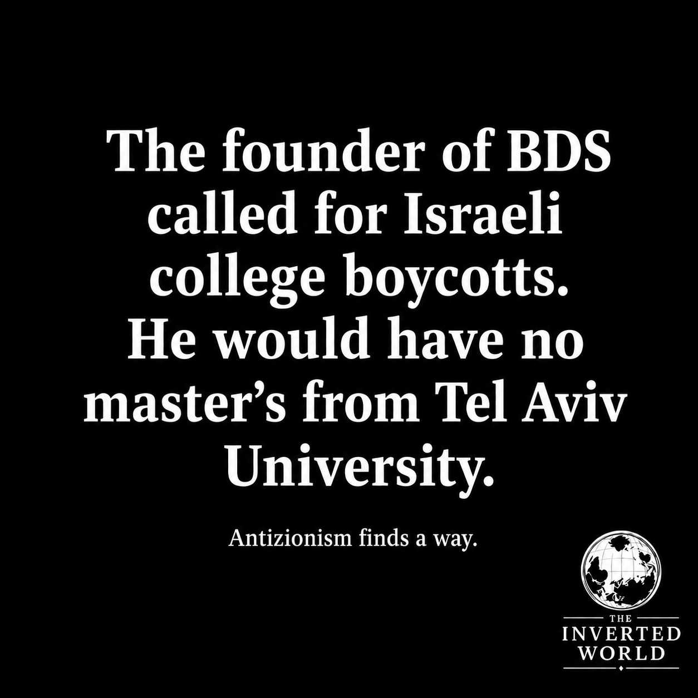
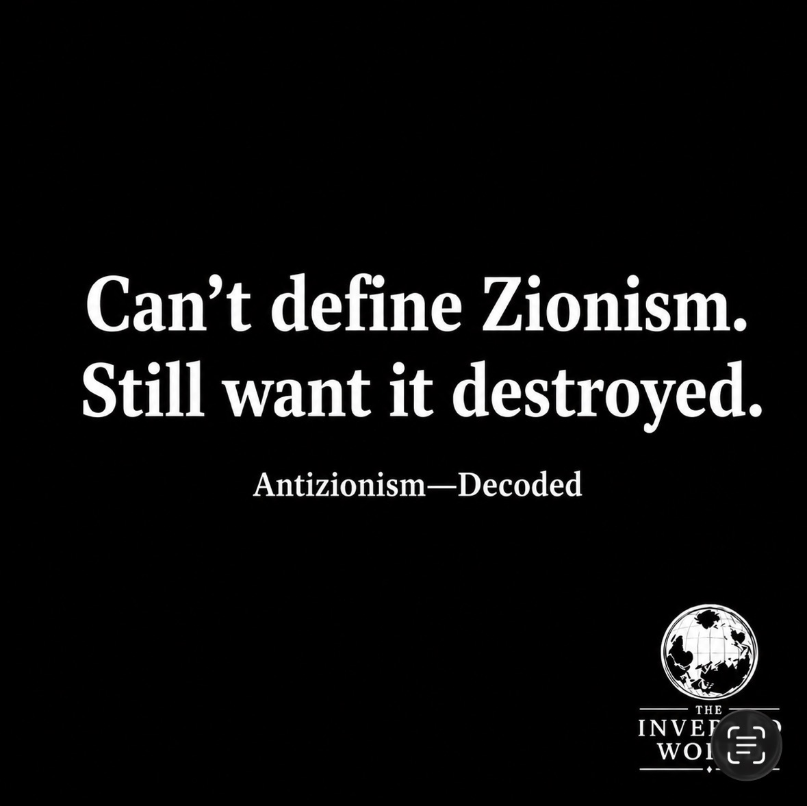
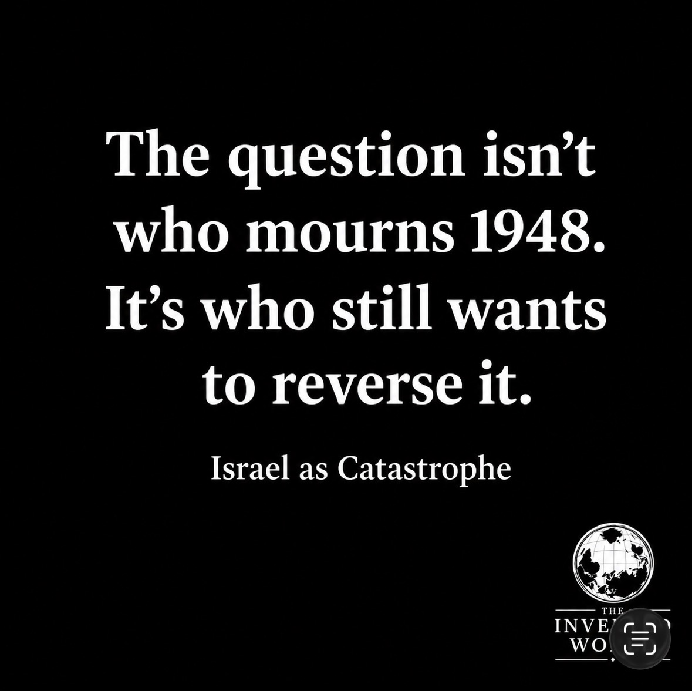
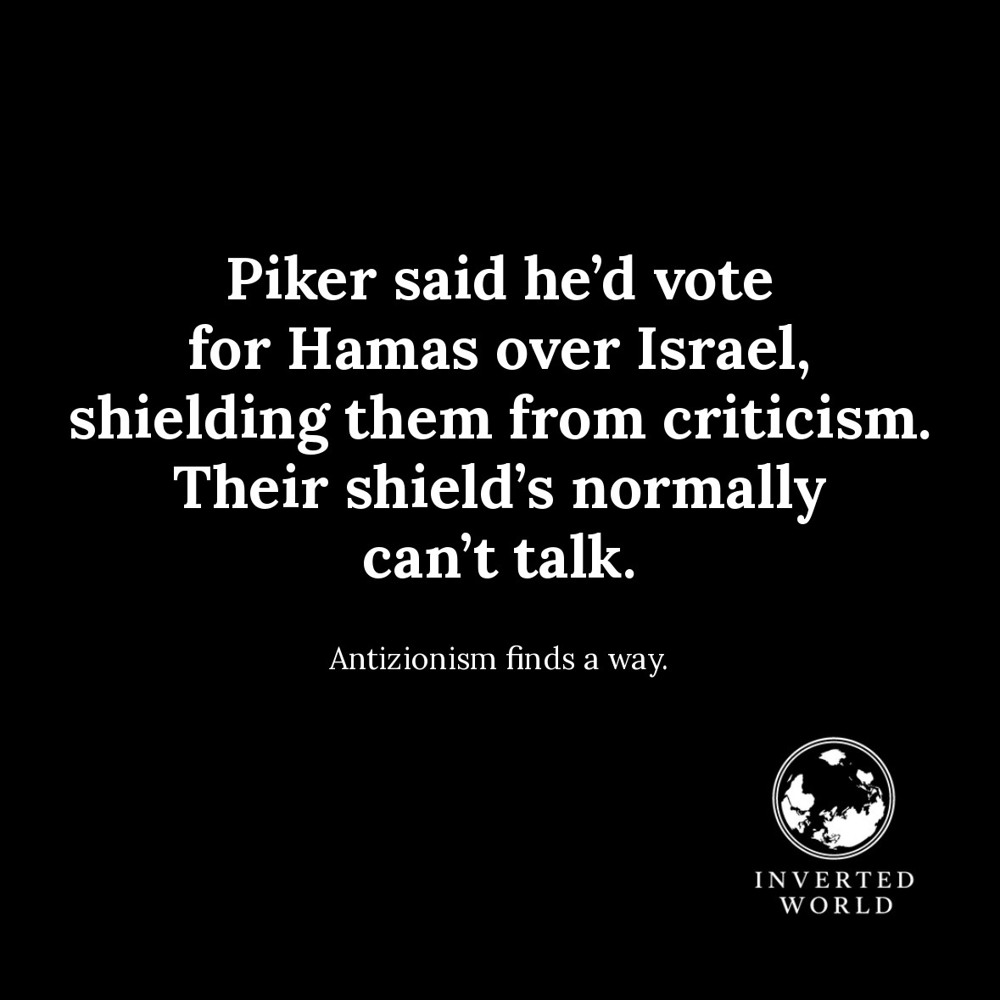

No. 01
That's it. That's the statement. Series.
The series launched with just a name and a period. No argument, no defense—just the fact that saying "Israel should exist" had become a statement requiring courage to make.
The Series · 24 Entries · 2024–2025
A running series of single-sentence graphics. Saying that Israel should exist—and has the right to keep existing—has become a statement that requires making. These are the statements.
The series launched with just a name and a period. No argument, no defense—just the fact that saying "Israel should exist" had become a statement requiring courage to make.
The second beat in the same argument: it's not just that Israel should have been created, it's that it should keep existing now.
The statement that turned a military democracy into a war crime factory just by saying it out loud.
The math problem antizionism can't solve. Genocides produce dead populations—Gaza's grew.
A statement of historical fact dressed as provocation. Jews have survived empires, inquisitions, pogroms, and industrialized murder.

The indigenous argument runs one direction only.

Forty-plus countries have identical foundations—and none of them get the word.
The question antizionism refuses to answer directly.

The accusation preceded the evidence, the verdict preceded the trial, and the label preceded the definition.

The graphic that refused the false binary.

Hundreds of marches, thousands of signs—not one named Hersh, or Agam, or Liri.
Assad gassed 200,000 Syrians. The movement saved its energy for the democracy.
Six words that collapsed the distinction the whole movement depends on.
Not a theory—a documented record.
Pittsburgh. Poway. Paris. The disclaimer kept ending up at the same address.

The verdict of genocide was unaffected. Antizionism will find a way.
The credential was supposed to settle it.

The gap between the policy and the life closed on its own.

The inability to define the target didn't slow down the demand to eliminate it.

Grief and eliminationism aren't the same thing.
The exception arrived the moment the survivors spoke Hebrew.
Not evidence, not findings: clamor.
Each line added a detail that made the disclaimer harder to sustain.

Piker's rhetorical shield, unlike theirs, was able to explain itself afterward.